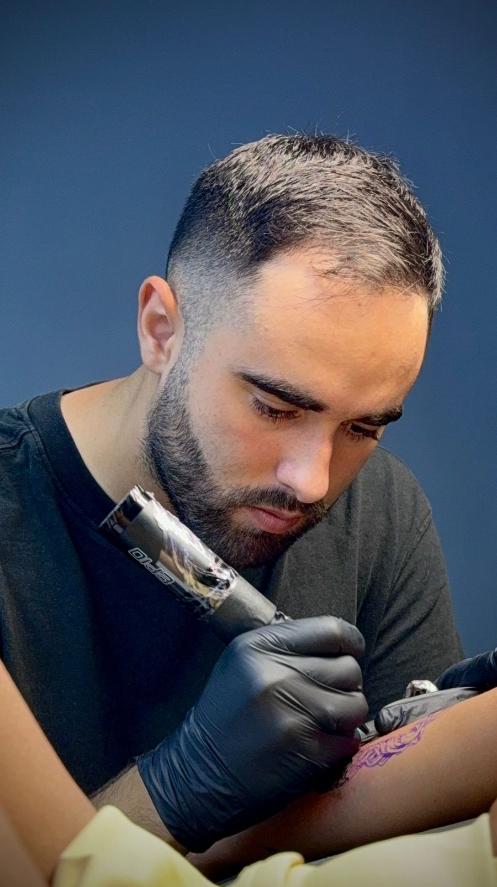
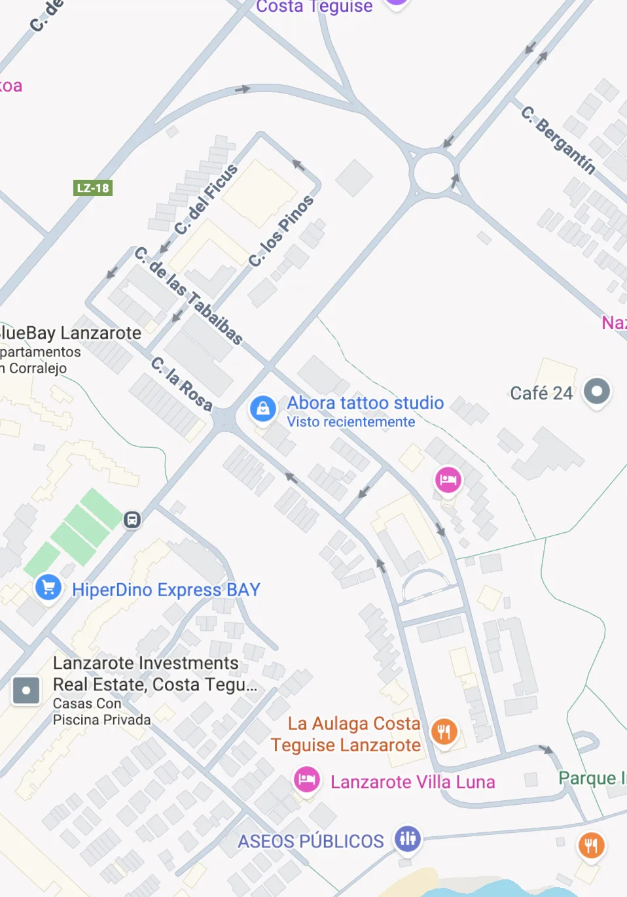

Cultura
Honramos las tradiciones del tatuaje mientras fomentamos un estudio diverso y creativo.
Honramos las tradiciones del tatuaje mientras fomentamos un estudio diverso y creativo.
Buscamos el máximo nivel tanto en la calidad artística como en la experiencia del cliente.
Creamos un ambiente creativo que motiva tanto a los artistas como a los clientes.
Cuatro tatuadores, cuatro formas de entender la tinta. Cada artista de nuestro estudio en Costa Teguise domina su estilo y trabaja contigo el diseño, desde la primera idea hasta la última línea.

Dotwork y anime
Punto a punto, Kevin construye sombras y texturas con una paciencia infinita. Especialista en dotwork y en llevar a la piel personajes y escenas del anime.

Realismo
Retratos, animales y escenas con un detalle que parece fotografía. Abian trabaja el realismo cuidando cada luz, cada sombra y cada matiz.

Tradicional americano
Líneas firmes, colores sólidos y diseños que nunca pasan de moda. Farru trae a Lanzarote el tradicional americano con todo su carácter.

Tradicional americano y japonés
Del tradicional americano al japonés: flores, koi, dragones y piezas grandes pensadas para fluir con tu cuerpo.

Realismo
Realismo en negro y gris de contraste suave y gran profundidad. Le apasionan las estatuas clásicas, la mitología y el micro-realismo: piezas llenas de detalle, pensadas para encajar en tu anatomía.
Una selección de trabajos reales hechos en nuestro estudio de Lanzarote: realismo, fineline, black work, tradicional y japonés. Inspírate y cuéntanos qué quieres llevar en la piel.


Nuestra historia
Abora era el dios del sol para los antiguos canarios. De esa luz nace nuestro nombre y nuestra forma de trabajar: un estudio de tatuajes en Costa Teguise, Lanzarote, donde se encuentran el arte, la cultura de la isla y el respeto por la tradición del tatuaje. Cada proyecto empieza con una conversación. Escuchamos tu idea, la convertimos en un diseño único y la tatuamos con los más altos estándares de higiene y calidad. Tanto si es tu primer tatuaje como si vienes a completar una pieza grande, aquí te vas a sentir como en casa. Recibimos a gente de toda la isla, de Arrecife a Playa Blanca, y a quienes nos visitan y quieren llevarse un pedazo de Lanzarote en la piel.

Gracias por el tatuaje a juego que nos hicimos mi esposo y yo. Muy profesionales y con un acabado impecable. Atendieron nuestras peticiones a pesar de la barrera del idioma. ¡Muchas gracias! Los recomiendo al 100%.
Me hice dos tatuajes con Daniela. Fue una experiencia increíble; fue muy dulce y amable. Los tatuajes quedaron exactamente como los quería. ¡Perfectos! ¡La recomiendo al 10000%! 🫶
Fui con mi pareja para su primer tattoo y un rediseño + un tattoo para mí, el trabajo lo realizó Kevin. Nos hizo la experiencia muy amena, muy buen chico y sobre todo un muy buen trabajo. Si volvemos a Lanzarote, ¡sin duda repetiremos!
¿Tienes una idea en mente? Cuéntanos el estilo, el tamaño y la zona, y te responderemos con una propuesta y una cita en nuestro estudio de Costa Teguise.
¿Dónde estamos?
Ven a conocer el estudio, ver nuestros trabajos y hablar de tu próximo tatuaje. Estamos en Costa Teguise, a pocos minutos de Arrecife y del aeropuerto de Lanzarote.

Todo lo que necesitas saber antes de tatuarte en nuestro estudio de Costa Teguise, Lanzarote.
Cada tatuaje se presupuesta por pieza, según el tamaño, la zona del cuerpo y el nivel de detalle. El precio mínimo es de 70 €. Cuéntanos tu idea y te damos presupuesto sin compromiso. El pago es siempre en efectivo.
Puedes venir sin cita: aceptamos walk-ins para todo tipo de tatuajes, según la disponibilidad de ese día. Si prefieres asegurarte tu hueco, reserva cita; normalmente tenemos disponibilidad en pocos días, aunque depende de cada tatuador.
Sí. Para reservar pedimos un depósito de entre 20 y 50 €, que se descuenta del precio total del tatuaje. Si cancelas con al menos 24 horas de antelación, te lo devolvemos.
Sí. Si vienes de vacaciones, te recomendamos tatuarte hacia el final de tu estancia: mientras el tatuaje cicatriza no conviene bañarse ni tomar el sol, así que podrás disfrutar antes de la playa.
Durante unas dos semanas, mientras cicatriza, evita bañarte en el mar, la piscina o el jacuzzi y no expongas el tatuaje al sol directo. Un tatuaje recién hecho es una herida abierta: el agua puede infectarlo y el sol, apagar los colores.
Al terminar cubrimos el tatuaje para protegerlo y, si lo prefieres, ofrecemos second skin (film protector) por 10 € más. Las primeras semanas protégelo del sol con ropa y, una vez curado, usa siempre protector solar alto: el sol de Canarias apaga los colores y difumina las líneas con el tiempo.
Sí. Puedes traer tu diseño y, si quieres, el tatuador lo adapta. Antes de empezar siempre revisamos y aprobamos el diseño contigo.
Sí, hacemos cover-ups para tapar o renovar tatuajes antiguos. Envíanos una foto del tatuaje y tu idea para valorarlo.
Realismo, fineline, tradicional americano, japonés, black work, dotwork y anime, entre otros. Cada tatuador tiene su especialidad: echa un vistazo al equipo y a la galería para elegir.
Sí, con consentimiento paterno. El padre, la madre o el tutor legal tiene que venir al estudio para firmar el consentimiento, tal como exige la normativa de Canarias.
Sí, en el estudio atendemos en castellano y en inglés.
Estamos en C. la Rosa, 10, en Costa Teguise (Lanzarote), en una zona muy accesible desde cualquier punto de Costa Teguise y de la isla. Hay aparcamiento cerca.